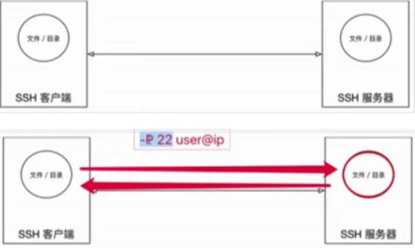
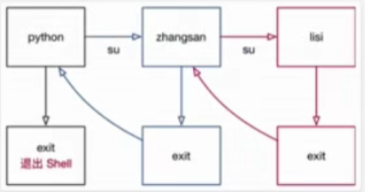

操作系统
操作系统就是特殊的软件
作用
- 直接操作硬件
- 把操作硬件的代码封装成一个又一个系统调用，供其它的成员通过系统调用间接操作操作系统的硬件
没有安装操作系统的计算机，被称为裸机
系统调用的好处
- 操作系统提供了不同的系统调用就可以直接和系统调用
操作系统吧对内存对硬盘对声卡等的操作统统都变成系统调用，避免了繁琐的0101的编码
不同应用领域的操作系统
桌面操作系统
windows系统
- 应用软件多，用户群体大
- 不稳定
macOS
- 适合开发人员
linux
- 应用软件少
- 用户基数少
服务器操作系统
服务器
硬件层面上：所谓服务器，一台电脑
软件层面上：安装在这台电脑上的操作系统
服务器的维护
- 不在现场维护，通过软件终端的方式，远程维护
系统
Linux
- 比Windows Server安全、稳定、免费
- 占有率高
Windows Server
- 付费
- 占有率低
用Python开发web服务器，选择服务器的时候
选择Linux服务器
- 服务器软件齐全，而且免费
嵌入式操作系统
- 用在开发智能硬件，
Linux
- （内核小，而且开源，使用简单）
移动设备操作系统
- IOS
- Android(基于Linux)
虚拟机
含义：指的是通过软件模拟的具有完整硬件系统功能的、运行在一个完全隔离环境中的完整计算机系统
优势
- 虚拟系统通过生成现有操作系统的全新虚拟镜像、具有真实操作系统完全一样的功能
- 进入虚拟系统后，所有的操作都是在这个全新的独立的虚拟系统中进行，可以独立安装运行软件，保存数据，拥有自己的独立桌面，不会对真正的系统产生任何影响
- 能够在现有的系统与虚拟镜像之间灵活切换的一类操作系统
操作系统发展简史
Linux**的内核版本和发行版**
Linux内核版本
内核：是系统的心脏，是运行程序和管理像磁盘和打印机等硬件设备的核心程序
内核只有一个
Linux内核又分为稳定版和开发版，两者相互关联，
Linux发行版本
通常包含了桌面环境、办公套件、媒体播放器、数据库等应用软件
分类
- unbuntu
- redhat
- openSUSE
- Debian
- CentOS
- Arch
- linux mint
- Fedora
linux 下的文件目录结构
Windows下文件系统
- Windows是单用户操作系统
- Linux是多用户操作系统
Linux下的文件系统
Linux GNU
开源
自由
类unix的系统，包含了大量的开发工具软件等
GPL —-通用的公用许可证
常用Linux命令的基本使用
学习命令的原因
- 在职场中，大量的服务器维护工作都是在远程通过SSH客户端来完成的
常用Linux命令的基本使用
ls 查看当前文件夹下的内容 pwd 查看当前所在的文件夹 cd 切换文件夹 touch 如果文件不存在，新建文件 mkdir 创建目录 rm 删除指定的文件名 clear 清屏
Linux**终端命令的格式**
command [-option] [parameter]
查阅命令帮助信息
–help
- command –help
man
- man command
文件和目录的常用命令
ls
类似于DOS下的dir
选项
-a 显示指定目录下的所有子目录与文件，包括隐藏文件 -l 以列表的方式显示文件的详细信息 -h 配合-l以人性化的方式显示文件的大小
ls通配符的使用
cd
选项
touch
- 如果文件 不存在，可以创建一个空白文件
- 如果文件 已经存在，可以修改文件的末次修改日期
mkdir
- 创建一个新的目录
- mkdir -p 地柜创建目录
- 新建目录的名称 不能与当前目录中 已有的目录或文件 同名
rm
直接从磁盘删除文件或者目录
使用 rm 命令要小心，因为文件删除后不能恢复
选项
-f 强制删除，忽略不存在的文件，无需提示 -r 递归删除目录下的内容，删除文件夹必须要加
tree
tree 命令可以以树状图列出文件目录结构
tree -d 只显示目录
cp
cp 命令的功能是将给出的 文件 或 目录 复制到另一个 文件 或 目录 中，相当于 DOS 下的 copy 命令
选项
-i 覆盖文件前提示 -r 若给出的源文件是目录文件，则 cp 将递归复制该目录下的所有子目录和文件，目标文件必须为一个目录名
mv
mv 命令可以用来 移动 文件 或 目录，也可以给 文件或目录重命名
选项
-I 覆盖文件先提示
查看文件内容
cat
cat 命令可以用来 查看文件内容、创建文件、文件合并、追加文件内容 等功能
cat 会一次显示所有的内容，适合 查看内容较少 的文本文件
选项
-b 对非空输出行编号 -n 对输出的所有行编号
Linux 中还有一个 nl 的命令和 cat -b 的效果等价
more
- more 命令可以用于分屏显示文件内容，每次只显示一页内容
- 适合于 查看内容较多的文本文件
grep
- Linux 系统中 grep 命令是一种强大的文本搜索工具
- grep允许对文本文件进行 模式查找，所谓模式查找，又被称为正则表达式，在就业班会详细讲解
echo 文字内容
- echo 会在终端中显示参数指定的文字，通常会和 重定向 联合使用
重定向>和>>
- Linux 允许将命令执行结果 重定向到一个 文件
- 将本应显示在终端上的内容 输出／追加 到指定文件中
- > 表示输出，会覆盖文件原有的内容
- >> 表示追加，会将内容追加到已有文件的末尾
管道|
Linux 允许将 一个命令的输出 可以通过管道 做为 另一个命令的输入
可以理解现实生活中的管子，管子的一头塞东西进去，另一头取出来，这里 | 的左右分为两端，左端塞东西（写），右端取东西（读）
常用的管道命令有：
- more：分屏显示内容
- grep：在命令执行结果的基础上查询指定的文本
远程管理常用命令
目标
关机/重启
shutdown
查看或配置网卡信息
ifconfig
ping
远程登录和复制文件
ssh
scp
01. 关机/重启
| 序号 | 命令 | 对应英文 | 作用 |
|---|---|---|---|
| 01 | shutdown 选项 时间 | shutdown | 关机／重新启动 |
1.1 shutdown
- shutdown 命令可以 安全 关闭 或者 重新启动系统
| 选项 | 含义 |
|---|---|
| -r | 重新启动 |
提示：
不指定选项和参数*，默认表示* 1 分钟*之后* 关闭电脑
远程维护服务器时，最好不要关闭系统，而应该重新启动系统 shutdown -r**命令
常用命令示例
# 重新启动操作系统，其中 now 表示现在
$ shutdown -r now
# 立刻关机，其中 now 表示现在
$ shutdown now
# 系统在今天的 20:25 会关机
$ shutdown 20:25 —-指定时间
# 系统再过十分钟后自动关机
$ shutdown +10
# 取消之前指定的关机计划
$ shutdown -c
02. 查看或配置网卡信息
| 序号 | 命令 | 对应英文 | 作用 |
|---|---|---|---|
| 01 | ifconfig | configure a network interface | 查看/配置计算机当前的网卡配置信息 |
| 02 | ping ip地址 | ping | 检测到目标 ip地址 的连接是否正常 |
2.1 网卡 和 IP 地址
网卡
- 网卡是一个专门负责网络通讯的硬件设备
- IP 地址是设置在网卡上的地址信息
我们可以把 电脑 比作 电话*，*网卡 相当于 SIM 卡*，*IP 地址 相当于 电话号码
IP 地址
- 每台联网的电脑上都有 IP 地址，是保证电脑之间正常通讯的重要设置
注意：**每台电脑的 IP 地址不能相同，否则会出现 IP 地址冲突，并且没有办法正常通讯
提示：有关 IP 地址*的详细内容，在就业班会详细讲解！*
2.2 ifconfig
- ifconfig 可以查看／配置计算机当前的网卡配置信息
# 查看网卡配置信息 $ ifconfig
# 查看网卡对应的 IP 地址 $ ifconfig | grep inet
提示：**一台计算机中有可能会有一个 物理网卡 和 多个虚拟网卡*，在 Linux 中物理网卡的名字通常以* ensXX 表示
- 127.0.0.1 被称为 本地回环/环回地址，一般用来测试本机网卡是否正常
2.3 ping
# 检测到目标主机是否连接正常
$ ping IP地址
# 检测本地网卡工作正常
$ ping 127.0.0.1
ping 一般用于检测当前计算机到目标计算机之间的网络 是否通畅，数值越大，速度越慢
- ping 的工作原理与潜水艇的声纳相似，**ping 这个命令就是取自 声纳的声音
- 网络管理员之间也常将 ping 用作动词 —— ping 一下计算机X，看他是否开着
原理：网络上的机器都有 唯一确定的 IP 地址，我们给目标 IP 地址发送一个数据包，对方就要返回一个数据包，根据返回的数据包以及时间，我们可以确定目标主机的存在
提示：在 Linux 中，想要终止一个终端程序的执行，绝大多数都可以使用 CTRL + C
03. 远程登录和复制文件
| 序号 | 命令 | 对应英文 | 作用 |
|---|---|---|---|
| 01 | ssh 用户名@ip | secure shell | 关机／重新启动 |
| 02 | scp 用户名@ip:文件名或路径 用户名@ip:文件名或路径 | secure copy | 远程复制文件 |
3.1 ssh 基础（重点）
在 Linux 中 SSH 是 非常常用 的工具，通过 SSH 客户端 我们可以连接到运行了 SSH 服务器 的远程机器上
SSH 客户端是一种使用 Secure Shell（SSH） 协议连接到远程计算机的软件程序
SSH 是目前较可靠，专为远程登录会话和其他网络服务 提供安全性的协议
利用 SSH 协议 可以有效防止远程管理过程中的信息泄露
通过 SSH 协议 可以对所有传输的数据进行加密，也能够防止 DNS 欺骗和 IP 欺骗
SSH 的另一项优点是传输的数据可以是经过压缩的，所以可以加快传输的速度
1) 域名 和 端口号
域名
- 由一串 用点分隔 的名字组成，例如：www.itcast.cn
- 是 IP 地址 的别名，方便用户记忆
端口号
- IP 地址：通过 IP 地址 找到网络上的 计算机
- 端口号：通过 端口号 可以找到 计算机上运行的应用程序
- SSH 服务器 的默认端口号是 22，如果是默认端口号，在连接的时候，可以省略
- 常见服务端口号列表：
| 序号 | 服务 | 端口号 |
|---|---|---|
| 01 | SSH 服务器 | 22 |
| 02 | Web 服务器 | 80 |
| 03 | HTTPS | 443 |
| 04 | FTP 服务器 | 21 |
通过**ip**地址找到服务器，再由端口号找到服务器上运行的相应软件
2) SSH 客户端的简单使用
ssh [-p port] user@remote
- user 是在远程机器上的用户名，如果不指定的话默认为当前用户
- remote 是远程机器的地址，可以是 IP／域名，或者是 后面会提到的别名
- port 是 SSH Server 监听的端口，如果不指定，就为默认值 22
提示：
- 使用 exit 退出当前用户的登录
注意：
ssh 这个终端命令只能在 Linux 或者 UNIX 系统下使用
如果在 Windows 系统中，可以安装 PuTTY 或者 XShell 客户端软件即可
提示：
- 在工作中，SSH 服务器的端口号很有可能不是 22，如果遇到这种情况就需要使用 -p 选项，指定正确的端口号，否则无法正常连接到服务器
3) Windows 下 SSH 客户端的安装
建议从官方网站下载正式的安装程序
3.2 scp**（掌握）**
scp 就是 secure copy，是一个在 Linux 下用来进行 远程拷贝文件 的命令
它的地址格式与 ssh 基本相同，需要注意的是，在指定端口时用的是大写的 -P 而不是小写的

# 把本地当前目录下的 01.py 文件 复制到 远程 家目录下的 Desktop/01.py
# 注意：: 后面的路径如果不是绝对路径，则以用户的家目录作为参照路径
scp -P port 01.py user@remote:Desktop/01.py
# 把远程 家目录下的 Desktop/01.py 文件 复制到 本地当前目录下的 01.py
scp -P port user@remote:Desktop/01.py 01.py
# 加上 -r 选项可以传送文件夹
# 把当前目录下的 demo 文件夹 复制到 远程 家目录下的 Desktop
scp -r demo user@remote:Desktop
# 把远程 家目录下的 Desktop 复制到 当前目录下的 demo 文件夹
scp -r user@remote:Desktop demo
| 选项 | 含义 |
|---|---|
| -r | 若给出的源文件是目录文件，则 scp 将递归复制该目录下的所有子目录和文件，目标文件必须为一个目录名 |
| -P | 若远程 SSH 服务器的端口不是 22，需要使用大写字母 -P 选项指定端口 |
注意：
scp 这个终端命令只能在 Linux 或者 UNIX 系统下使用
如果在 Windows 系统中，可以安装 PuTTY**，使用 pscp 命令行工具或者安装 FileZilla 使用 FTP 进行文件传输
FileZilla
FileZilla 在传输文件时，使用的是 FTP 服务 而不是 SSH 服务，因此端口号应该设置为 21
3.3 SSH 高级（知道）
- 免密码登录
- 配置别名
提示：有关 SSH 配置信息都保存在用户家目录下的 .ssh 目录下
1）免密码登录
步骤
- 配置公钥
- 执行 ssh-keygen 即可生成 SSH 钥匙，一路回车即可
- 上传公钥到服务器
- 执行 ssh-copy-id -p port user@remote，可以让远程服务器记住我们的公钥
示意图
非对称加密算法
- 使用 公钥 加密的数据，需要使用 私钥 解密
- 使用 私钥 加密的数据，需要使用 公钥 解密
2) 配置别名
每次都输入 ssh -p port user@remote，时间久了会觉得很麻烦，特别是当 user, remote 和 port 都得输入，而且还不好记忆
而 配置别名 可以让我们进一步偷懒，譬如用：ssh mac 来替代上面这么一长串，那么就在 ~/.ssh/config 里面追加以下内容：
Host mac
HostName ip地址
User itheima
Port 22
保存之后，即可用 ssh mac 实现远程登录了，**scp** 同样可以使用
用户权限相关命令
目标
- 用户 和 权限 的基本概念
- 用户管理 终端命令
- 组管理 终端命令
- 修改权限 终端命令
01. 用户 和 权限 的基本概念
1.1 基本概念
- 用户 是 Linux 系统工作中重要的一环，用户管理包括 用户 与 组 管理
- 在 Linux 系统中，不论是由本机或是远程登录系统，每个系统都必须拥有一个账号，并且对于不同的系统资源拥有不同的使用权限
- 在 Linux 中，可以指定 每一个用户 针对 不同的文件或者目录 的 不同权限
- 对 文件／目录 的权限包括：
| 序号 | 权限 | 英文 | 缩写 | 数字代号 |
|---|---|---|---|---|
| 01 | 读 | read | r | 4 |
| 02 | 写 | write | w | 2 |
| 03 | 执行 | excute | x | 1 |
1.2 组
为了方便用户管理，提出了 组 的概念
在实际应用中，可以预先针对 组 设置好权限，然后 将不同的用户添加到对应的组中，从而不用依次为每一个用户设置权限
1.3 ls -l 扩展
ls -l 可以查看文件夹下文件的详细信息，从左到右依次是：
权限，第 1 个字符如果是 d 表示目录
硬链接数，通俗地讲，就是有多少种方式，可以访问到当前目录／文件
- 拥有者，家目录下 文件／目录 的拥有者通常都是当前用户
- 组，在 Linux 中，很多时候，会出现组名和用户名相同的情况，后续会讲
- 大小
- 时间
- 名称
1.4 chmod 简单使用（重要）
chmod 可以修改 用户／组 对 文件／目录 的权限
命令格式如下：
chmod +/-rwx 文件名|目录名
提示：以上方式会一次性修改 拥有者 / 组 权限，有关 chmod 的高级用法，后续会讲
1.5 超级用户
- Linux 系统中的 root 账号通常 用于系统的维护和管理，对操作系统的所有资源 具有所有访问权限
- 在大多数版本的 Linux 中，都不推荐 直接使用 root 账号登录系统
- 在 Linux 安装的过程中，系统会自动创建一个用户账号，而这个默认的用户就称为“标准用户”
sudo
su 是 substitute user 的缩写，表示 使用另一个用户的身份
sudo 命令用来以其他身份来执行命令，预设的身份为 root
用户使用 sudo 时，必须先输入密码，之后有 5 分钟的有效期限，超过期限则必须重新输入密码
若其未经授权的用户企图使用 sudo**，则会发出警告邮件给管理员
02. 组管理 终端命令
提示：*创建组 */ 删除组 的终端命令都需要通过 sudo 执行
| 序号 | 命令 | 作用 |
|---|---|---|
| 01 | groupadd 组名 | 添加组 |
| 02 | groupdel 组名 | 删除组 |
| 03 | cat /etc/group | 确认组信息 |
| 04 | chgrp -R 组名 文件/目录名 | 递归修改文件/目录的所属组 |
提示：
组信息保存在 /etc/group 文件中
/etc 目录是专门用来保存 系统配置信息 的目录
- 在实际应用中，可以预先针对 组 设置好权限，然后 将不同的用户添加到对应的组中，从而不用依次为每一个用户设置权限
演练目标
- 在 python 用户的桌面文件夹下创建 Python学习 目录
- 新建 dev 组
- 将 Python学习 目录的组修改为 dev
03. 用户管理 终端命令
提示：*创建用户 */ 删除用户 / 修改其他用户密码 的终端命令都需要通过 sudo 执行
3.1 创建用户／设置密码／删除用户
| 序号 | 命令 | 作用 | 说明 |
|---|---|---|---|
| 01 | useradd -m -g 组 新建用户名 | 添加新用户 | -m 自动建立用户家目录 -g 指定用户所在的组，否则会建立一个和同名的组 |
| 02 | passwd 用户名 | 设置用户密码 | 如果是普通用户，直接用 passwd 可以修改自己的账户密码 |
| 03 | userdel -r 用户名 | 删除用户 | -r 选项会自动删除用户家目录 |
| 04 | cat /etc/passwd | grep 用户名 | 确认用户信息 | 新建用户后，用户信息会保存在 /etc/passwd 文件中 |
提示：
- 创建用户时，如果忘记添加 -m 选项指定新用户的家目录 —— 最简单的方法就是***删除用户，重新创建***
- 创建用户时，默认会创建一个和***用户名同名的组名***
- 用户信息保存在 /etc/passwd 文件中
3.2 查看用户信息
| 序号 | 命令 | 作用 |
|---|---|---|
| 01 | id [用户名] | 查看用户 UID 和 GID 信息 |
| 02 | who | 查看当前所有登录的用户列表和用户的所有来源 |
| 03 | whoami | 查看当前登录用户的账户名 |
passwd 文件
/etc/passwd 文件存放的是用户的信息，由 6 个分号组成的 7 个信息，分别是
- 用户名
- 密码（x，表示加密的密码）
- UID（用户标识）
- GID（组标识）
- 用户全名或本地帐号
- 家目录
- 登录使用的 Shell，就是登录之后，使用的终端命令，**ubuntu** 默认是 dash
usermod
usermod 可以用来设置 用户 的 主组 ／ 附加组 和 登录 Shell，命令格式如下：
主组：通常在新建用户时指定，在 etc/passwd 的第 4 列 GID 对应的组
附加组：在 etc/group 中最后一列表示该组的用户列表，用于指定 用户的附加权限
提示：设置了用户的附加组之后，需要重新登录才能生效！
# 修改用户的主组（passwd 中的 GID）
usermod -g 组 用户名
# 修改用户的附加组
usermod -G 组 用户名
# 修改用户登录 Shell
usermod -s /bin/bash 用户名
注意：默认使用 useradd 添加的用户是没有权限使用 sudo 以 root 身份执行命令的，可以使用以下命令，将用户添加到 sudo 附加组中
usermod -G sudo 用户名
which（重要）
提示
- /etc/passwd 是用于保存用户信息的文本文件（不能执行）
- /usr/bin/passwd 是专门用于修改用户密码的程序
- which 命令可以查看执行命令所在位置，例如：
which ls
# 输出
# /bin/ls
which useradd
# 输出
# /usr/sbin/useradd
bin 和 sbin
在 Linux 中，绝大多数可执行文件都是保存在 /bin、/sbin、/usr/bin、/usr/sbin
/bin（binary）是二进制执行文件目录，主要用于具体应用
/sbin（system binary）是系统管理员专用的二进制代码存放目录，主要用于系统管理
/usr/bin（user commands for applications）后期安装的一些软件
/usr/sbin（super user commands for applications）超级用户的一些管理程序
提示：
- cd 这个终端命令是内置在系统内核中的，没有独立的文件，因此用 which 无法找到 cd 命令的位置
3.3 切换用户
| 序号 | 命令 | 作用 | 说明 |
|---|---|---|---|
| 01 | su - 用户名 | 切换用户，并且切换目录 | - 可以切换到用户家目录，否则保持位置不变 |
| 02 | exit | 退出当前登录账户 |
su 不接用户名，可以切换到 root**，但是不推荐使用，因为不安全**
- 如果一个不小心可能会导致整个系统的瘫痪
exit 示意图如下：
- 只是返回到上级用户

04. 修改文件权限
| 序号 | 命令 | 作用 |
|---|---|---|
| 01 | chown | 修改拥有者 |
| 02 | chgrp | 修改组 |
| 03 | chmod | 修改权限 |
- 命令格式如下：
| # 修改文件|目录的拥有者 | chown 用户名 文件名|目录名 |
|---|---|
| # 递归修改文件|目录的组 | chgrp -R 组名 文件名|目录名 |
| # 递归修改文件权限 | chmod -R 755 文件名|目录名 |
- chmod 在设置权限时，可以简单地使用三个数字分别对应 拥有者 ／ 组 和 其他 用户的权限
# 直接修改文件|目录的 读|写|执行 权限，但是不能精确到 拥有者|组|其他
chmod +/-rwx 文件名|目录名
常见数字组合有（u表示用户／g表示组／o表示其他）：
- 777 ===> u=rwx,g=rwx,o=rwx
- 755 ===> u=rwx,g=rx,o=rx
- 644 ===> u=rw,g=r,o=r
chmod 演练目标
- 将 01.py 的权限修改为 u=rwx,g=rx,o=r
- 将 123.txt 的权限修改为 u=rw,g=r,o=-
- 将 test 目录以及目录下的 所有 文件权限修改为 u=rwx,g=rwx,o=rx
系统信息相关命令
本节内容主要是为了方便通过远程终端维护服务器时，查看服务器上当前 系统日期和时间 ／ 磁盘空间占用情况 ／ 程序执行情况
本小结学习的终端命令基本都是查询命令，通过这些命令对系统资源的使用情况有个了解
目标
时间和日期
- date
- cal
磁盘和目录空间
- df
- du
进程信息
- ps
- top
- kill
01. 时间和日期
01 date 查看系统时间 02 cal calendar 查看日历，-y 选项可以查看一年的日历
02. 磁盘信息
| df -h | disk free 显示磁盘剩余空间 |
|---|---|
| du -h [目录名] | disk usage 显示目录下的文件大小 |
选项说明
| -h | 以人性化的方式显示文件大小 |
|---|---|
03. 进程信息
所谓 进程，通俗地说就是 当前正在执行的一个程序
| ps aux | process status 查看进程的详细状况 |
|---|---|
| top | 动态显示运行中的进程并且排序 |
| kill [-9] 进程代号 | 终止指定代号的进程，-9 表示强行终止 |
ps 默认只会显示当前用户通过终端启动的应用程序
ps 选项说明功能
| a | 显示终端上的所有进程，包括其他用户的进程 |
|---|---|
| u | 显示进程的详细状态 |
| x | 显示没有控制终端的进程 |
提示：使用 kill 命令时，最好只终止由当前用户开启的进程，而不要终止 root 身份开启的进程，否则可能导致系统崩溃
要退出 top 可以直接输入 q
PID—**进程的代号**
其他命令
目标
查找文件
- find
软链接
- ln
打包和压缩
- tar
软件安装
- apt-get
01. 查找文件
- find 命令功能非常强大，通常用来在 特定的目录下 搜索 符合条件的文件
| 序号 | 命令 | 作用 |
|---|---|---|
| 01 | find [路径] -name “*.py” | 查找指定路径下扩展名是 .py 的文件，包括子目录 |
- 如果省略路径，表示在当前文件夹下查找
- 之前学习的通配符，在使用 find 命令时同时可用
- 有关 find 的高级使用，在就业班会讲
演练目标
- \1. 搜索桌面目录下，文件名包含 1 的文件
find -name “1“
- \2. 搜索桌面目录下，所有以 .txt 为扩展名的文件
find -name “*.txt”
- \3. 搜索桌面目录下，以数字 1 开头的文件
find -name “1*”
02. 软链接
相当于windows下的快捷方式
| 序号 | 命令 | 作用 |
|---|---|---|
| 01 | ln -s 被链接的源文件 链接文件 | 建立文件的软链接，用通俗的方式讲类似于 Windows 下的快捷方式 |
注意：
\1. 没有 -s 选项建立的是一个 硬链接文件
- 两个文件占用相同大小的硬盘空间，工作中几乎不会建立文件的硬链接
\2. 源文件要使用**绝对路径**，不能使用相对路径，这样可以方便移动链接文件后，仍然能够正常使用
演练目标
- \1. 将桌面目录下的 01.py 移动到 demo/b/c 目录下
- \2. 在桌面目录下新建 01.py 的 软链接 FirstPython
- 分别使用 相对路径 和 绝对路径 建立 FirstPython 的软链接
\3. 将 FirstPython 移动到 demo 目录下，对比使用 相对路径 和 绝对路径 的区别

硬链接简介（知道）
- 在使用 ln 创建链接时，如果没有 -s 选项，会创建一个 硬链接，而不是软链接
硬链接演练
\1. 在 ~/Desktop/demo 目录下建立 ~/Desktop/demo/b/c/01.py 的硬链接 01_hard
\2. 使用 ls -l 查看文件的硬链接数（硬链接——有多少种方式可以访问文件或者目录）
\3. 删除 ~/Desktop/demo/b/c/01.py，并且使用 tree 来确认 demo 目录下的三个链接文件
- 源文件删除之后，软连接的文件全部失效，而硬链接的文件内容还在
文件软硬链接的示意图
在 Linux 中，*文件名 *和 文件的数据 是分开存储的
提示：
- 在 Linux 中，只有文件的 硬链接数 == 0 才会被删除
- 使用 ls -l 可以查看一个文件的硬链接的数量
- 在日常工作中，几乎不会建立文件的硬链接，知道即可
03. 打包压缩
打包压缩 是日常工作中备份文件的一种方式
在不同操作系统中，常用的打包压缩方式是不同的
- Windows 常用 rar
- Mac 常用 zip
- Linux 常用 tar.gz
3.1 打包 ／ 解包
- tar 是 Linux 中最常用的 备份工具，此命令可以 把一系列文件 打包到 一个大文件中，也可以把一个 打包的大文件恢复成一系列文件
- tar**只负责打包不负责压缩**
- tar 的命令格式如下：
| # 打包文件 | tar -cvf 打包文件.tar 被打包的文件／路径… |
|---|---|
| # 解包文件 | tar -xvf 打包文件.tar |
- tar 选项说明
| 选项 | 含义 |
|---|---|
| c | 生成档案文件，创建打包文件 |
| x | 解开档案文件 |
| v | 列出归档解档的详细过程，显示进度 |
| f | 指定档案文件名称，f 后面一定是 .tar 文件，所以必须放选项最后 |
注意：**f 选项必须放在最后，其他选项顺序可以随意
打包解包演练
- 删除桌面下的所有内容
- 在桌面下新建三个空白文件 01.py、02.py、03.py
- 将这三个文件打一个 py.tar 的包
- 新建 tar 目录，并且将 py.tar 移动到 tar 目录下
- 解包 py.tar
3.2 压缩／解压缩
1) gzip
tar 与 gzip 命令结合可以使用实现文件 打包和压缩
tar 只负责打包文件，但不压缩
用 gzip 压缩 tar 打包后的文件，其扩展名一般用 xxx.tar.gz
在 Linux 中，最常见的压缩文件格式就是 xxx.tar.gz
- 在 tar 命令中有一个选项 -z 可以调用 gzip，从而可以方便的实现压缩和解压缩的功能
- 命令格式如下：
| # 压缩文件 | tar -zcvf 打包文件.tar.gz 被压缩的文件／路径… |
|---|---|
| # 解压缩文件 | tar -zxvf 打包文件.tar.gz |
| # 解压缩到指定路径 | tar -zxvf 打包文件.tar.gz -C 目标路径 |
|---|---|
| 选项 | 含义 |
|---|---|
| -C | 解压缩到指定目录，注意：要解压缩的目录必须存在 |
2) bzip2(two)
tar 与 bzip2 命令结合可以使用实现文件 打包和压缩（用法和 gzip 一样）
tar 只负责打包文件，但不压缩，
用 bzip2 压缩 tar 打包后的文件，其扩展名一般用 xxx.tar.bz2
在 tar 命令中有一个选项 -j 可以调用 bzip2，从而可以方便的实现压缩和解压缩的功能
命令格式如下：
| # 压缩文件 | tar -jcvf 打包文件.tar.bz2 被压缩的文件／路径… |
|---|---|
| # 解压缩文件 | tar -jxvf 打包文件.tar.bz2 |
04. 软件安装
4.1 通过 apt 安装／卸载软件
- apt 是 Advanced Packaging Tool，是 Linux 下的一款安装包管理工具
- 可以在终端中方便的 安装／卸载／更新软件包
| # 1. 安装软件 | $ sudo apt install 软件包 |
|---|---|
| # 2. 卸载软件 | $ sudo apt remove 软件名 |
| # 3. 更新已安装的包 | $ sudo apt upgrade |
安装演练
| # 一个小火车提示 | $ sudo apt install sl |
|---|---|
| # 一个比较漂亮的查看当前进程排名的软件 | $ sudo apt install htop |
4.2 配置软件源
- 如果希望在 ubuntu 中安装软件，更加快速，可以通过设置镜像源，选择一个访问网速更快的服务器，来提供软件下载／安装服务
- 提示：更换服务器之后，需要一个相对比较长时间的更新过程，需要耐心等待。更新完成后，再安装软件都会从新设置的服务器下载软件了
所谓镜像源，就是所有服务器的内容是相同的（镜像），但是根据所在位置不同，国内服务器通常速度会更快一些！